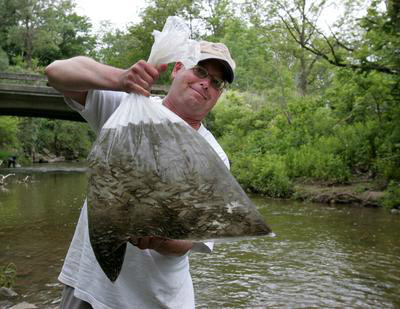
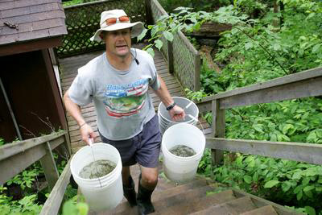

TRAA Projects
"Hands-on Environmentalism" is what we do ...
This is what sets the TRAA apart from other clubs and organizations. You'll find us right in the water clearing obstructions from streams, measuring returning salmonids & taking scale samples for DNA analysis, education through trout hatchery tours & stream walks, being a voice for the Thames River watershed & its inhabitants and the list goes on.
TRAA Salmonid Monitoring
Spring 2013 will be our fourth year of this 5-year project

TRAA Salmonid Monitoring

